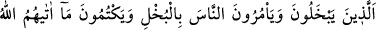
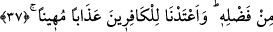
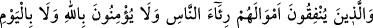
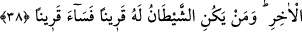

oldu.[35] Allah Teâlâ bize de size de ihlas nasip eylesin.
37- Bunlar cimrilik eden ve insanlara da cimriliği tavsiye eden, Allah’ın
kendilerine lütfundan verdiğini gizleyen kimselerdir. Biz, kâfirler için alçaltıcı bir
azap hazırladık.
“Bunlar” her türlü ayıplamayı hak eden, kendilerine ihsan edilen şeylerde “cimrilik
eden ve insanlara da” kendilerine ihsan edilen şeylerde “cimriliği tavsiye eden,
Allah’ın kendilerine lütfundan verdiğini” mal ve zenginliği “gizleyen kimselerdir.”
Biz, kâfirler için alçaltıcı bir azap hazırladık.” Burada zamir kullanacak yerde
“kâfirler” denilerek açık isim kullanılmıştır. Bunun sebebi ise bu durumda olanların
Allah’ın nimetini inkâr edip nankör olduklarını bildirmek içindir. Allah’ın nimetlerine
nankörlük edenler için kendileri cimrilikle ve gizleyerek nimeti aşağıladıkları gibi
onları da alçaltıcı bir azab vardır.
Bu âyet, ensârâ gûyâ nasîhat ederek: “Mallarınızı infak etmeyin, korkarız ki bu gidişle
fakir düşeceksiniz.” diyen bir grup yahûdî hakkında nâzil olmuştur.
38- Allah’a ve âhiret gününe inanmadıkları halde mallarını, insanlara gösteriş için
sarfedenler de (âhirette azaba dûçâr olurlar). Şeytan bir kimseye arkadaş olursa,
ne kötü bir arkadaştır o!
“Mallarını” Allah rızâsına ulaşma arzusuyla değil, “insanlara gösteriş için”,
övünmek için; amma cömert adam, ne kadar da eli açık desinler diye “sarfederler.”
Cimrilik ile malı gereksiz yere harcamak demek olan isrâf, ifrât ve tefrîtin iki ucu
olduklarından çirkinlik ve kötülenip kınanmayı gerektirme konularında birbirine
denktirler. Onun için Allah onları da yerme ve tehdide ortak kılmıştır.
“Allah’a ve âhiret gününe inanmazlar” ki, mal infâkı sebebiyle O’nun rızâ ve
sevâbını elde etsinler. Bunlar mallarını Allah Rasûlü (s.a.v)’ne düşmanlıkta harcayan
Mekke müşrikleridir. “Şeytan bir kimseye arkadaş olursa, ne kötü bir arkadaştır o!”
Yâni şeytan ve yardımcıları onları böyle çirkin davranışlara ittiği ve güzel gösterdiği
için ne kötü birer arkadaş ve dostturlar.